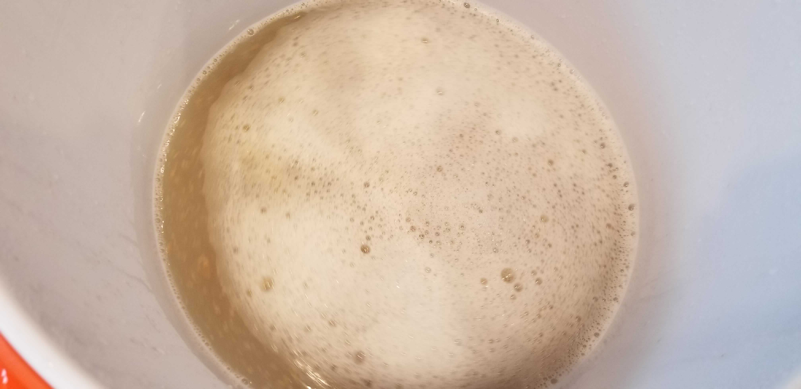
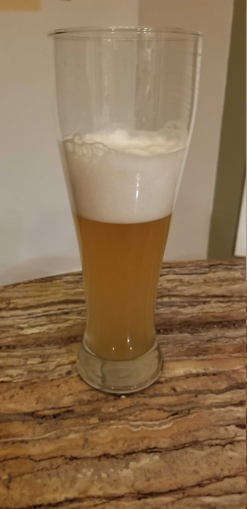

Well, its summer time again and about time to brew a crowd pleaser from last year, Dwight’s Honey Orange Wheat. Last year this was an extract recipe that we tweaked a little to more closely follow Palmer’s extract brewing method and added an addition of orange peel for some orange aromas. Since then I’ve built a mash tun and started brewing all-grain recipes exclusively, so, naturally, I converted this extract recipe to all-grain as well.
In addition to changing to all grain we made several ingredient upgrades. First, the honey changed from basic clover honey to orange blossom honey. I have never seen orange blossom honey in stores near my house before, but I have tried mead made with it and the orange is very obvious. The consistency of the particular brand of orange blossom honey I tried is also much runnier than clover honey and a lot easier to work with.
We also upgraded our yeast from simple Muntons Ale Yeast to a White Labs WLP-029 Kölcsh ale yeast. This should provide a crisp, clean tasting beer.
Recipe: Dwight’s Honey Orange Wheat v2
General Information
| Batch Size | 3 Gal |
| Batch Type | All Grain |
| Expected OG | 49 |
| Actual OG | 42 |
| Expected FG | 12 |
| Actual FG | 7 - 8 |
| ABV | TBD |
| IBU | 14 |
| SRM | 3 |
| Mash | Single Infusion, 60 min |
| Boil | 60 min |
Ingredients
General Brew Ingredients
Ingredients are per 1 gallon where applicable.
| Amount | Ingredient |
|---|---|
| Fermentables | |
| 0.37 lb | 2-row Malt |
| 0.833 lb | White Wheat Malt |
| 0.11 lb | Pilsner Malt |
| 0.4 lb | Orange Blossom Honey |
| Hops | |
| 0.9 oz | Mt. Hood Hops 5.5% AA |
| 0.283 oz | Cascade Hops 7.15% AA |
| Others | |
| 1/6 tab* | Whirlfloc |
| 1/3 oz | Dried Sweet Orange Peel |
| Yeast | |
| 1/3 Packet* | White Labs WLP-029 Kölcsh ale yeast |
| 1 tsp | Yeast Nutrient |
| 1 1/2 tsp | Yeast Energizer |
* Note that all values are simply divided by 3 from what was used in this 3 gallon batch, so use what makes the most sense to you at the time.
Mash
| Type | Single Infusion |
| Duration | 60 min |
| Sparge | Batch |
| Water/Grist | 1.5 qt/lb |
| Target pH | 5.4 |
| Target Mash Temp | 152°F |
| Strike Water Temp | 164°F |
| Actual Mash Temp | 152°F |
| Strike Water Volume | 1.45 gal |
| Sparge Voume | 3.951 gal |
| (Strike) Water Treatment | per 1 gallon |
| Calcium Chloride | 1 g |
| Table Salt | ~1/10 tsp |
Strike Water Additions
This brew still used Reverse Osmosis (RO) water, and the strike water was treated with table salt and calcium chloride to hit the target pH.
| Ca+2 | Mg+2 | Na+ | Cl- | SO4-2 | Alkalinity | Residual Alkalinity |
|---|---|---|---|---|---|---|
| 39.3 | 0.0 | 9.4 | 84.1 | 0.0 | 2.6 | -25.4 |

Super weird looking! Not sure exactly why this had so little color, possibly just the small size of the grain bill. Will probably dig into this later.
I also didn’t think to run the first runnings back through the grain bed to clear it up, not sure that it mattered this time though.
At this point the gravity was a measly 24 points.
Boil
Boil Schedule
| Time Remaining in Boil | Addition |
|---|---|
| 60 min | Mt. Hood Hops (all) |
| 10 min | Cascade Hops (all) |
| 5 min | Whirlflocc |
| Honey (all) | |
| Flameout | Remove Hops |
| Post Flameout (~170%deg;F) | Steep Sweet Orange Peel |
| -15 min | Remove Orange Peel |
We did notice a little color come into the beer after adding the honey, although it is still pretty odd looking right now.
Fermentation
The carboy was kept in the basement which typically hovers in the low 60°s and wrapped in a fermwrap targeting 70°-72°F.
The primary fermentation was most active in the first 3 days, and a total of 8 days was allowed for the primary. The yeast did a lot more work than expected, with the FG landing between 7 and 8 points.
Carbing
The beer has been racked to a keg and allowed to carb for ~2 weeks at 60°F and 30 psi. Unfortunately I don’t have anywhere cooler to carb this until Memorial Day, hence the high psi.
Result
Taste Test 1
This taste taste was taken on 5/30/19, due to a few things popping up. The beer was served at ~63°F.

Appearance
This wheater turned out a straw color with obvious haze. The head is thick with a dense, creamy appearance, and chased the brew down the glass.
Aroma
Honey. Very clear honey, just like when pouring honey from the bottle. Very floral with a hint of vanilla. Upon closer inspection orange appears. No malt or hops.
Flavor
Honey right up front, crashing onto the palate. Again, floral and a little grassy. The honey makes way for fresh yeast bread once swirled. The finish pulls in a little sweet orange on the way down.
Mouthfeel
Low to medium body, crisp. Rolls and slides around the tongue easily with a melted cream feel.
Taste Tests 2 and 3
These taste tests were on 5/31/19 and 6/1/19. The keg was chilled in a cooler over night to the upper 30°Fs - low 40°Fs.
Aroma
At these temperatures the honey aromas all disappear. A light malt and bread crust smell comes out along with a tiny hint of orange.
Taste
As one would expect, the honey flavors all slipped away. Here the bread flavors are most prevalent with a hint of orange peel at the tail end. One sampler noticed some strawberry as well.
Things To Do Better
Efficiency
Typically I assume an efficiency of 60-65%, depending on how optimistic I’m feeling. I haven’t done much yet to try to raise this, so far just including water treatment in the brew homework. However, water treatment wasn’t sufficient this time - the efficiency is much closer to a shockingly low 50%.
One suggestion that was made to me months ago was that the grain I’m using isn’t milled well enough. This could be because some homebrew shops don’t mill very finely or don’t tighten up their mills often, or any number of reasons somewhat outside my control since I dont personally mill the grain. Unfortunately, I haven’t consistently sourced my grain from the same place, so this is difficult to account for when planning a recipe. One more piece of equipment to purchase would simply be a grain mill to keep at home and set as needed, rather than relying on whatever brew shop the grain is coming from.
Secondly, I’ve read that stirring for a few seconds every 15 minutes has helped some batch sparging brewers. Given that most of us avoid opening the mash tun to maintain the temperature this is pretty surprising, but since this is cheap solution I’ll be giving this a shot next time.
Serving Temperature Control
Kegging is great. Such a simple way to carbonate an entire batch of beer that doesn’t involve cleaning 30 to 50 bottles. However, in my case maintaining a proper serving temperature is difficult since I don’t have a keezer of any sort, instead I fill a cooler with ice and just drop the temperature somewhat haphazardly. At some point down the road having a keezer would be great just to maintain a more specific ball park temperature. In this beer’s case I would have loved to serve it from 48°F to 54°F, but served it on either side of that range.
Honey Additions
This time around we decided to not change anything in the boil process since we were already making drastic changes converting the beer to all grain from extract. The honey was added during the boil, but both of us brewing were both strongly leaning towards adding the honey either after the boil or after the primary to attempt to maximize the honey flavor and aroma. The next time we brew this, hopefully later this summer, we plan on moving back the honey addition to one of those times.
Just Chill
After we mashed the grain we were pretty put off by the color, or lack thereof, of the wort. There was a fair amount of second guessing and concerns that we made a mistake or skipped a step somewhere. Oddly enough with the original extract version of this recipe we had a similar concern - after fermenting but before bottle conditioning the uncarbonated beer tasted pretty awful. However, in both cases the beer turned out to be a pretty great crowd pleaser. It’s easy to second guess a brew or over think it, but we need to just remember it’s still going to be beer and it will probably be pretty ok.